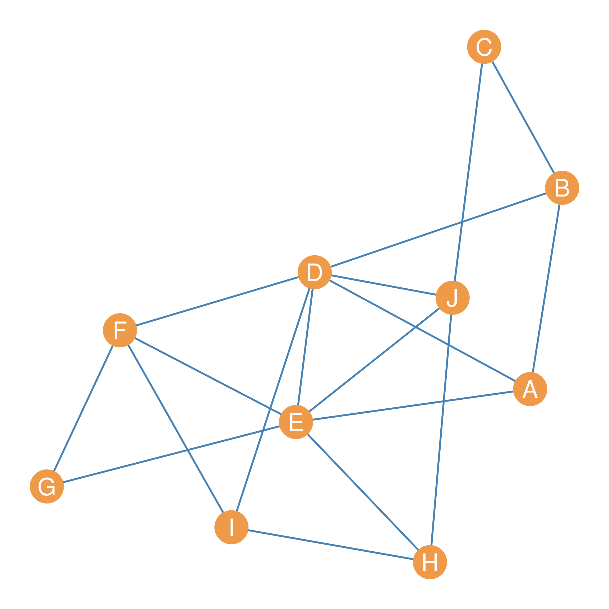

| A | B | C | D | E | F | G | H | I | J | |
|---|---|---|---|---|---|---|---|---|---|---|
| A | 0 | 1 | 0 | 1 | 1 | 0 | 0 | 0 | 0 | 0 |
| B | 1 | 0 | 1 | 1 | 0 | 0 | 0 | 0 | 0 | 0 |
| C | 0 | 1 | 0 | 0 | 0 | 0 | 0 | 0 | 0 | 1 |
| D | 1 | 1 | 0 | 0 | 1 | 1 | 0 | 0 | 1 | 1 |
| E | 1 | 0 | 0 | 1 | 0 | 1 | 1 | 1 | 0 | 1 |
| F | 0 | 0 | 0 | 1 | 1 | 0 | 1 | 0 | 1 | 0 |
| G | 0 | 0 | 0 | 0 | 1 | 1 | 0 | 0 | 0 | 0 |
| H | 0 | 0 | 0 | 0 | 1 | 0 | 0 | 0 | 1 | 1 |
| I | 0 | 0 | 0 | 1 | 0 | 1 | 0 | 1 | 0 | 0 |
| J | 0 | 0 | 1 | 1 | 1 | 0 | 0 | 1 | 0 | 0 |
30 Getting Centrality from Others
Previously, we discussed the idea of centrality mainly from a “positional” perspective. That is, a node’s centrality depends on where it is located in the graph’s connectivity structure (Borgatti 2005). Either by being “close” to many others, either directly—as with degree centrality—or indirectly—as with closeness centrality—or being in the “middle” of the connections of many others—as with betweenness centrality.
But there is another way of thinking about centrality, and it relates more to the idea that being central is being connected to central people, not just to many other people (or being in between many people). Under this alternative definition, the ultimate way of being central resolves into being connected to many people who are also central.
From this perspective, you get the centrality of the people you are connected to, so that your centrality \(C_i\) should be a function of the centrality of the people that are adjacent to you in the graph.
Expressed as a formula:
\[ C_i = \sum_j a_{ij}C_j \tag{30.1}\]
Now, this looks like it does what we want. The centrality of node \(i\), expressed as \(C_i\), is a sum of the centrality \(C_j\) of the people they are connected to, since the right-hand side of the sum will be a number that does not equal zero only when \(a_{ij} = 1\), that is, when node \(i\) is connected to node \(j\) in the network.
The one issue with Equation 32.5 is that we have a chicken-or-the-egg problem. Which centrality comes first? That of node \(i\) or node \(j\)? We don’t know since the centrality term appears on both sides of the equation. So while Equation 32.5 is conceptually appealing, it’s like a snake eating it’s own tail.
Nevertheless, not all is lost. We can make progress in coming up with a centrality measure in which your centrality is a function of the centrality of others, or more accurately, in which the people you are connected to “give” their centrality to you (and that total amounts makes up your centrality score), by just assigning everybody some “amount” of centrality “points” at the beginning and then using Equation 32.5 to “loop” through the network to calculate everyone else’s centrality.
Let’s see how this would work.

Figure 30.1 shows a graph with an associated adjacency matrix shown in Table 32.1. Our task is to come up with a centrality metric for all nodes in this graph that roughly follows the spirit of Equation 32.5. The idea is to compute a “fist pass” set of centrality scores for each node in the graph by first “initializing” everyone’s centrality to some arbitrary positive number, and computing each node’s centrality as the sum of the centralities of the nodes it is connected to.
For instance, let’s say that we give everyone one centrality point to “give out” to everyone they are connected to in the first step. Let us calculate the centrality of node \(E\) in Figure 30.1 using this approach. We know from looking at Table 32.1 that \(E\)’s neighbor set is equal to \(\{A, D, F, G, H, J\}\). If at the beginning, \(E\) gets one “centrality point” from each of their neighbors, then their starting centrality would be equal to:
\[ C(1)_E = C(0)_A + C(0)_D + C(0)_F + C(0)_G + C(0)_H + C(0)_J = \]
\[ C(1)_E = 1 + 1 + 1 + 1 + 1 + 1 = 6 \]
Where \(C(0)\) indicates everyone’s centralities at “step zero” (the centralities everyone begins with), and \(C(1)\) indicates everyone’s centralities at the first step.
As we can see, because everyone just has one centrality point to give out, \(E\) initial centrality \(C(1)_E\) is just their degree and the same for everybody else!
We can record these initial centralities in a table for each node, shown as Table 30.2 (a). Note that because we don’t care about the specific number (which once again is just everyone’s degree), but only about the rank order of nodes, we divide the initial centralities by the maximum observed (the graph’s maximum degree) so that nodes with the maximum observed centrality at this step gets a score of 1.0—in this case \(D\) and \(E\)—and everyone gets a smaller number depending on how many centrality points they got from their neighbors at step 1.
| A | 0.50 |
| B | 0.50 |
| C | 0.33 |
| D | 1.00 |
| E | 1.00 |
| F | 0.67 |
| G | 0.33 |
| H | 0.50 |
| I | 0.50 |
| J | 0.67 |
| A | 0.65 |
| B | 0.48 |
| C | 0.30 |
| D | 1.00 |
| E | 0.96 |
| F | 0.74 |
| G | 0.43 |
| H | 0.57 |
| I | 0.57 |
| J | 0.74 |
| A | 0.59 |
| B | 0.47 |
| C | 0.29 |
| D | 1.00 |
| E | 1.00 |
| F | 0.72 |
| G | 0.41 |
| H | 0.55 |
| I | 0.56 |
| J | 0.68 |
| A | 0.62 |
| B | 0.47 |
| C | 0.29 |
| D | 1.00 |
| E | 0.98 |
| F | 0.74 |
| G | 0.43 |
| H | 0.56 |
| I | 0.56 |
| J | 0.71 |
| A | 0.60 |
| B | 0.47 |
| C | 0.29 |
| D | 1.00 |
| E | 0.99 |
| F | 0.73 |
| G | 0.42 |
| H | 0.55 |
| I | 0.56 |
| J | 0.69 |
| A | 0.61 |
| B | 0.47 |
| C | 0.29 |
| D | 1.00 |
| E | 0.99 |
| F | 0.74 |
| G | 0.43 |
| H | 0.56 |
| I | 0.56 |
| J | 0.70 |
| A | 0.60 |
| B | 0.47 |
| C | 0.29 |
| D | 1.00 |
| E | 0.99 |
| F | 0.73 |
| G | 0.42 |
| H | 0.55 |
| I | 0.56 |
| J | 0.70 |
| A | 0.61 |
| B | 0.47 |
| C | 0.29 |
| D | 1.00 |
| E | 0.99 |
| F | 0.73 |
| G | 0.43 |
| H | 0.56 |
| I | 0.56 |
| J | 0.70 |
| A | 0.61 |
| B | 0.47 |
| C | 0.29 |
| D | 1.00 |
| E | 0.99 |
| F | 0.73 |
| G | 0.42 |
| H | 0.55 |
| I | 0.56 |
| J | 0.70 |
Now, of course, we can keep going and apply Equation 32.5 again, but this time the centrality “points” each node gets are the \(C(1)\) scores recorded in Table 30.2 (a). So in this step, node \(E\)’s centrality is simply:
\[ C(2)_E = C(1)_A + C(1)_D + C(1)_F + C(1)_G + C(1)_H + C(1)_J = \]
\[ C(1)_E = 0.5 + 1 + 0.67 + 0.33 + 0.5 + 0.67 = 3.67 \]
Once again, because we only care about the ranking and not the exact number, we divide each score by the maximum observed at this step. The results are shown in Table 30.2 (b). As we can see, node \(D\) is still at the top, but node \(E\) has slipped to second place. The reason for that is that \(E\) gets less centrality “bang” (the points given by others) for their “buck” (their number of connections). While both \(D\) and \(E\) are connected to the same number of others, \(E\) is connected to fewer central others than \(D\). The same happened to \(A\) and \(B\), who were tied at step one, but are now separated at step two, with \(A\) being more central than \(B\).
Of course, we can keep going and calculate centralities at steps three (\(C(3)\)), four (\(C(4)\)), and so on. The results are shown in Table 30.2 (c) through Table 30.2 (i).
Note one interesting thing that happens as we iterate through these steps. The rank order of the centrality scores stops changing! While there are some minute differences between Table 30.2 (h) and Table 30.2 (i), the order in which nodes are arranged in terms of who has the top centrality, the second biggest, and the third biggest, all the way down to the last, is pretty much the same.
That means that as we proceed further and further, until the ranks begin to “freeze.” So we can decide to stop after the sum of the (absolute value) of the differences between the centrality score at some step \(k\), expressed as \(C(k)\), and those at the previous step \(C(k-1)\) are smaller than some criterion (e.g., \(e = 0.0001\)). In which case, we have arrived at the centrality scores we wanted! These are shown in Table 30.3.
| D | 1.000 |
| E | 0.990 |
| F | 0.734 |
| J | 0.698 |
| A | 0.605 |
| I | 0.564 |
| H | 0.555 |
| B | 0.466 |
| G | 0.425 |
| C | 0.287 |
| D | 1.000 |
| E | 0.990 |
| F | 0.734 |
| J | 0.698 |
| A | 0.605 |
| I | 0.564 |
| H | 0.555 |
| B | 0.466 |
| G | 0.425 |
| C | 0.287 |
Now it turns out there is a way to derive a set of centrality scores that will arrange the nodes in the graph from top to bottom, just like we did in Table 30.3, but without going through all the work of iterating through various steps using Equation 32.5. Imagine that there is a magical unknown number—let’s call it \(\lambda\)—and a magical vector—let’s call it \(\mathbf{b}\)— containing the scores that we want. The numbers in the vector will arrange the nodes in the graph exactly like in Table 30.3, only if the following equation is satisfied:
\[ A \mathbf{b} = \lambda \mathbf{b} \tag{30.2}\]
Equation 32.6 says that the magical vector containing the centrality scores exists, only if there is a set of numbers we can fill out the vector with, so that when multiply the network adjacency matrix times this vector (which as we know from Chapter 23 results in another vector of the same length as \(\mathbf{b}\)) we get the same answer as multiplying the vector times the magical number \(\lambda\).
It turns out that there is a way to use mathematical magic to solve Equation 32.6 using methods from linear algebra. In this field, the vector \(\mathbf{b}\) that satisfies equation Equation 32.6 is called an eigenvector of the matrix \(A\). In the same way, the magical number \(\lambda\) is called an eigenvalue of the same matrix.
The method from linear algebra that allows us to find \(\mathbf{b}\) and \(\lambda\) is called the eigen-decomposition of the adjacency matrix \(A\) (I know, all terrible names). When eigen-decomposing a square matrix like the adjacency matrix \(A\), the aim is to find two other matrices, \(\Lambda\) and \(U\), of the same dimensions as the original, such that the following matrix multiplication equation is satisfied:
\[ A = U \Lambda U^T \tag{30.3}\]
Where the matrix \(U^T\) is just the transpose of \(U\). The main difference between \(U\) and \(\Lambda\) is that \(U\) is going to be full of numbers (contain non-zero entries in each cell). The matrix \(\Lambda\), on the other hand, is going to have zeros in each cell except the diagonals, which will contain a series of numbers \(\lambda_1, \lambda_2, \lambda_3 \ldots \lambda_k\), where \(k\) is equal to the number of rows or columns of the original matrix.
At the same time, each column of \(U\) can be considered separately as a vector, and each of them counts as an eigenvector of \(A\). Each eigenvector of \(U\) can be paired with one of the numbers on the diagonal of \(\Lambda\). So the first column of \(U\) is called the first eigenvector of \(A\), and it is paired with the entry in the \(\lambda_{1 \times 1}\) cell of the matrix \(\Lambda\), which is called the first eigenvalue of \(A\). The same goes for the second column of \(U\)—called the second eigenvector of \(A\)—which is paired with the number in cell \(\lambda_{2 \times 2}\) of \(\Lambda\) (the second eigenvalue of \(A\)), and so forth, all the way up to \(k^{th}\) eigenvector (the \(k^{th}\) column of \(U\)) and the entry in the \(k \times k\) cell of \(\Lambda\) (the \(k^{th}\) eigenvalue), where \(k\) is equal to the number of rows (or columns) of \(A\).
| A | B | C | D | E | F | G | H | I | J | |
|---|---|---|---|---|---|---|---|---|---|---|
| A | -0.29 | -0.32 | -0.34 | 0.07 | -0.47 | -0.18 | 0.44 | -0.32 | -0.37 | -0.04 |
| B | -0.22 | -0.55 | -0.23 | -0.09 | 0.17 | -0.37 | -0.44 | 0.33 | -0.03 | 0.33 |
| C | -0.14 | -0.43 | 0.27 | 0.12 | 0.60 | -0.11 | 0.46 | -0.09 | 0.21 | -0.28 |
| D | -0.47 | -0.14 | -0.20 | -0.26 | -0.06 | 0.46 | -0.32 | -0.09 | 0.23 | -0.52 |
| E | -0.47 | 0.17 | 0.04 | 0.40 | -0.27 | -0.01 | 0.19 | 0.25 | 0.58 | 0.29 |
| F | -0.35 | 0.38 | -0.29 | -0.06 | 0.37 | 0.14 | 0.27 | 0.48 | -0.44 | -0.01 |
| G | -0.20 | 0.33 | -0.21 | 0.49 | 0.30 | -0.32 | -0.36 | -0.48 | -0.07 | -0.11 |
| H | -0.26 | 0.17 | 0.54 | -0.14 | -0.25 | -0.52 | -0.12 | 0.23 | -0.17 | -0.41 |
| I | -0.27 | 0.25 | 0.04 | -0.67 | 0.15 | -0.19 | 0.13 | -0.40 | 0.18 | 0.38 |
| J | -0.33 | -0.15 | 0.55 | 0.18 | 0.03 | 0.42 | -0.17 | -0.19 | -0.40 | 0.36 |
| A | B | C | D | E | F | G | H | I | J | |
|---|---|---|---|---|---|---|---|---|---|---|
| A | 4.06 | 0.00 | 0.00 | 0.00 | 0.00 | 0.00 | 0.00 | 0.00 | 0.0 | 0.00 |
| B | 0.00 | 1.62 | 0.00 | 0.00 | 0.00 | 0.00 | 0.00 | 0.00 | 0.0 | 0.00 |
| C | 0.00 | 0.00 | 1.17 | 0.00 | 0.00 | 0.00 | 0.00 | 0.00 | 0.0 | 0.00 |
| D | 0.00 | 0.00 | 0.00 | 0.69 | 0.00 | 0.00 | 0.00 | 0.00 | 0.0 | 0.00 |
| E | 0.00 | 0.00 | 0.00 | 0.00 | 0.34 | 0.00 | 0.00 | 0.00 | 0.0 | 0.00 |
| F | 0.00 | 0.00 | 0.00 | 0.00 | 0.00 | -0.43 | 0.00 | 0.00 | 0.0 | 0.00 |
| G | 0.00 | 0.00 | 0.00 | 0.00 | 0.00 | 0.00 | -1.31 | 0.00 | 0.0 | 0.00 |
| H | 0.00 | 0.00 | 0.00 | 0.00 | 0.00 | 0.00 | 0.00 | -1.52 | 0.0 | 0.00 |
| I | 0.00 | 0.00 | 0.00 | 0.00 | 0.00 | 0.00 | 0.00 | 0.00 | -2.1 | 0.00 |
| J | 0.00 | 0.00 | 0.00 | 0.00 | 0.00 | 0.00 | 0.00 | 0.00 | 0.0 | -2.52 |
To cut to the chase, the first column of \(U\), corresponding to the firt eigenvector of \(A\), contains the centrality scores we seek (those that go into the vector \(\mathbf{b}\) and therefore satisfy Equation 32.6) and the number in the first row and first column of the matrix \(\Lambda\) is the eigenvalue that satisfies Equation 32.6 (\(\lambda\)). Because of this, the centrality scores \(\mathbf{b}\) obtained via this method are called the eigenvector centralities of the nodes in the network represented by the adjacency matrix \(A\) (Bonacich 1972).
The matrix containing the eigenvectors corresponding to the adjacency matrix \(A\) in Table 32.1 is shown in Table 30.4 (a). The corresponding eigenvalues of \(A\) are shown as the diagonal entries of the matrix shown in Table 30.4 (b). We can verify that arranging the nodes in the graph shown in Figure 30.1 by the (absolute) values of the scores in the first column of Table 30.4 (a) yields the same scores as those obtained by iteratively assigning each node the centralities of the other nodes to which it was connected.
| A | B | C | D | E | F | G | H | I | J |
|---|---|---|---|---|---|---|---|---|---|
| -0.286 | -0.22 | -0.136 | -0.473 | -0.468 | -0.347 | -0.201 | -0.262 | -0.267 | -0.33 |
| A | B | C | D | E | F | G | H | I | J |
|---|---|---|---|---|---|---|---|---|---|
| 0.286 | 0.22 | 0.136 | 0.473 | 0.468 | 0.347 | 0.201 | 0.262 | 0.267 | 0.33 |
| A | B | C | D | E | F | G | H | I | J |
|---|---|---|---|---|---|---|---|---|---|
| 0.605 | 0.465 | 0.288 | 1 | 0.989 | 0.734 | 0.425 | 0.554 | 0.564 | 0.698 |
First, we take the first column of Table 30.4 (a) and arrange it as a vector \(\mathbf{e}\), as in Table 30.5 (a). Since the numbers in the eigenvector are negative, we get rid of the negative by taking the absolute value of the scores in the vector \(|\mathbf{e}|\), as in Table 30.5 (b). Finally, because we only care about the rank, not the specific number, we divide by the maximum value \(max(|\mathbf{e}|) = 0.473\), yielding the scores shown in Table 30.5 (c). As shown in Table 30.3 (b), these scores are identical to those that we found via our iterative procedure!
These eigenvector centrality scores, therefore, give us a sense of which nodes in the network are well-connected, in the sense of receiving centrality from being linked to central others.
References
Bonacich, Phillip. 1972. “Factoring and Weighting Approaches to Status Scores and Clique Identification.” Journal of Mathematical Sociology 2 (1): 113–20.
Borgatti, Stephen P. 2005. “Centrality and Network Flow.” Social Networks 27 (1): 55–71. http://www.sciencedirect.com/science/article/pii/S0378873304000693.